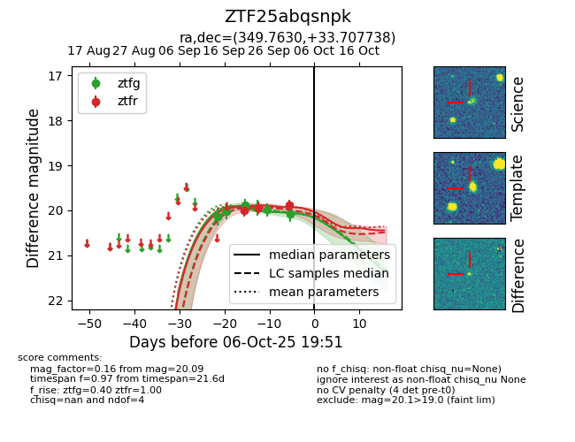
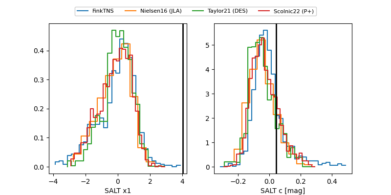

FINK: ZTF25abqsnpk
Lasair: ZTF25abqsnpk
ALeRCE: ZTF25abqsnpk
ZTF25abqsnpk (ztf,fink)
equatorial (ra, dec) = (349.7630,+33.70774)
galactic (l, b) = (101.7662,-25.33867)


last ztfg=20.09, ztfr=19.89
6 ztfg, 3 ztfr detections